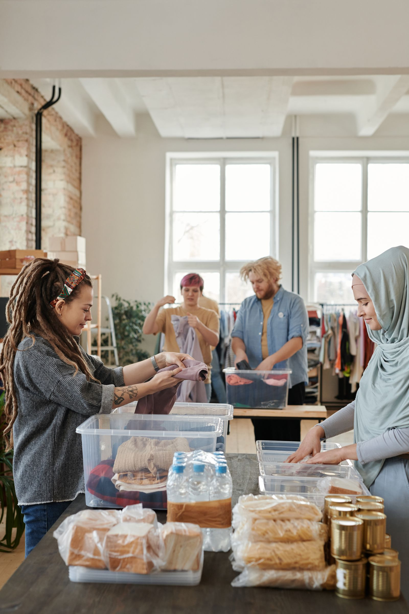

GET INVOLVED
Hope grows
when we show up.
Help shape the beginning of a mission built around compassion, practical care, and possibility.
MAKE ROOM FOR A NEW BEGINNING
Bring what you can.
Build what matters.
The mission is taking shape, and there are many ways to be part of the foundation. Future volunteer opportunities, donation arrangements, and partnerships will be shared as they are confirmed.
Give your time
Express interest in helping with future community support, donation coordination, and outreach.
Share useful resources
Help identify reliable local services and practical information for women experiencing homelessness.
Build a connection
Explore future collaboration as a local business, community group, or faith community.

Care has many forms.
If you would like to give food, new clothing, or financial support, explore the mission’s planned giving options.
Ways to support the mission ↗